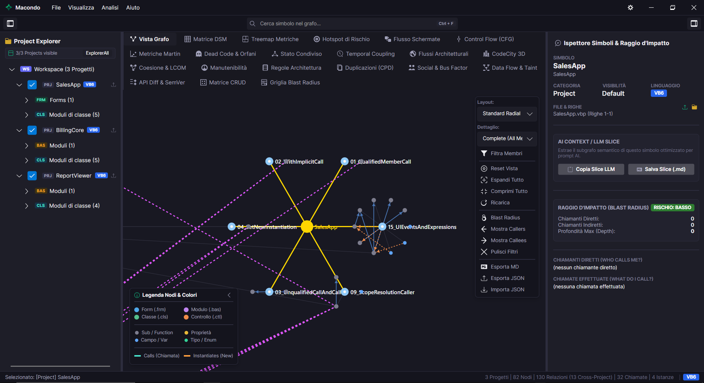

Analizzatore semantico, grafo delle dipendenze, calcolo del Blast Radius e suite completa di analisi per codebase legacy e moderne in Visual Basic 6.0 e C# / .NET. 100% offline, privacy assoluta, pronto per la modernizzazione con modelli AI.

Parsing AST completo di progetti Visual Basic 6.0 (.vbp, .frm, .bas, .cls, .ctl) e soluzioni C# / .NET (.csproj, .sln, .cs). Esplora gerarchie e chiamate con 4 algoritmi di layout ottimizzati per grandi progetti.
La matrice Blast Radius traccia ricorsivamente ogni chiamante a monte in progetti VB6 e C#. Riconosci prima di toccare il codice quali schermate UI, classi o servizi verranno impattati.
Oltre 20 strumenti di analisi statica deterministica, diagnostica architetturale e valutazione del rischio integrati in un unico ambiente 100% offline.
Visualizzazione vettoriale interattiva a 60 FPS con 4 motori di layout (Radiale Standard, Affinità, Cluster a Isole e Force-Directed) ed espansione dinamica dei simboli.
Mappa visiva delle transizioni e navigazione tra le interfacce utente (Form, finestre e dialog) con individuazione dei punti di apertura e catene di transizione.
Decomposizione a blocchi base (Basic Blocks) per singola routine con percorsi di esecuzione, nodi decisionali, rami condizionali e cicli.
Diagramma circolare a corde che quantifica i volumi di chiamata e l'interdipendenza tra layer, cartelle, namespace e package architetturali.
Rappresentazione metaforica 3D del software: gli edifici rappresentano i file/moduli, l'altezza rispecchia le LOC, la base la complessità e il colore il livello di rischio.
Matrice di dipendenza ad alta densità per individuare immediatamente accoppiamenti nascosti, feedback loop e cicli tra moduli o sottosistemi.
Mappa gerarchica proporzionale con drill-down interattivo: individua istantaneamente dove si concentrano le righe di codice e la massima complessità ciclomatica.
Calcolo rigoroso di accoppiamento afferente/efferente (Ca, Ce), Instabilità (I), Astrazione (A) e Distanza dalla Sequenza Principale (D) secondo i principi di Robert C. Martin.
Misura di Lack of Cohesion of Methods (LCOM4 / Henderson-Sellers) per rilevare classi gonfie o con responsabilità frammentate da rifattorizzare.
Punteggio sintetico di manutenibilità (0–100) derivato da Volume di Halstead, Complessità Ciclomatica di McCabe e righe di codice effettive.
Verifica automatica di conformità dei vincoli architetturali (es. impedire accessi diretti dal layer di presentazione al database).
Tracciamento ricorsivo di tutti i chiamanti diretti e indiretti con valutazione del rischio di regressione da Basso a Critico e griglia di audit navigabile.
Scatter plot 2D che incrocia la Complessità Ciclomatica con la Frequenza di modifica/Fan-in per evidenziare i componenti più critici e vulnerabili.
Scansione e isolamento automatico di routine, classi o variabili mai chiamate per snellire la codebase prima di una migrazione.
Mappatura trasparente di variabili pubbliche e globali con tracciamento esatto di chi legge (Readers) e chi scrive (Writers) lo stato.
Mining della cronologia dei commit per individuare file e moduli non formalmente collegati ma che cambiano costantemente insieme nel tempo.
Individuazione di blocchi duplicati, routine clonate e pattern copia-incolla ridondanti da consolidare ed eliminare.
Tracciamento della propagazione di variabili e parametri attraverso le chiamate di metodo per verificare flussi sensibili e input non sanitizzati.
Mappatura incrociata tra moduli di business e tabelle database, classificando le operazioni Create, Read, Update e Delete effettuate.
Confronto semantico tra revisioni del codice per rilevare breaking change, modifiche a firme di metodi pubblici o aggiunte di contratti API.
Analisi della proprietà del codice e concentrazione della conoscenza per sviluppatore per calcolare il Bus Factor e prevenire colli di bottiglia nel team.
Estrai Repo Map e contesti semantici compatti in formato Markdown pronti per Claude, ChatGPT, Gemini, Copilot, Cursor, ecc. per guidare la riscrittura o modernizzazione in C#/.NET e linguaggi moderni.
Nessun abbonamento, nessuna licenza a pagamento, nessun limite artificiale. Uno strumento creato per la community di sviluppatori.
Funziona al 100% in locale sul tuo computer. Nessun sorgente o metadato viene mai inviato all'esterno o sul cloud.
Cache persistente ultra-veloce su disco: apri progetti enterprise con centinaia di file e moduli in una frazione di secondo.
Scarica direttamente l'eseguibile Macondo per Windows. Nessuna installazione richiesta, avvio istantaneo con supporto a VB6 e C#.
Scarica Macondo.exe (Windows x64)